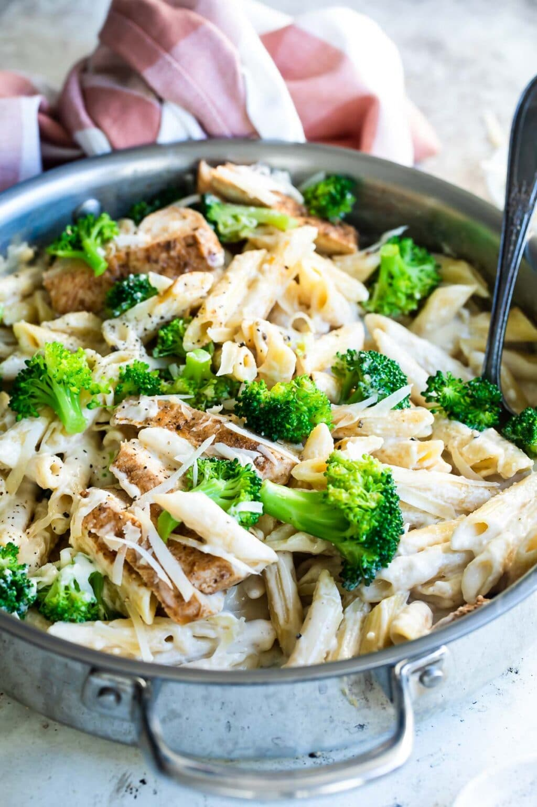

Cajun Chicken Alfredo with Broccoli Recipe

Description
Nearly every popular chain restaurant has their own version of Cajun Chicken Alfredo. And although it’s probably cliche at this point, I can’t deny it’s downright irresistible. There’s something about the combination of spicy, creamy, and savory that just works. Plus, my restaurant copycat recipe gets a boost by way of Blanched Broccoli, so we can call it a healthy dinner idea, right?!
Ingredients
- penne pasta
- chicken breast cutlets
- homemade cajun seasoning
- dry white wine
- salt and pepper
- garlic
- butter
- parmesan cheese
- heavy cream
- olive oil
Steps
- Preheat oven to 200 degrees. In a large pot, bring 4 quarts water and 1 tablespoon salt to boil. Add pasta and cook until al dente, about 9 minutes. Remove pasta and reserve pasta cooking water in the pot.
- Return pasta cooking water to boil. Add broccoli and blanch until just tender and bright green, about 1 to 2 minutes. Immediately drain and plunge into a bowl of ice water to stop the cooking and set the color.
- Meanwhile, sprinkle both sides of the chicken generously with cajun seasoning. In large skillet, heat oil until shimmering.
- Add chicken to skillet in a single layer and cook, flipping once, until the temperature on an internal thermometer reaches 165 degrees, about 5 minutes on each side. Transfer clean baking sheet or oven-safe plate, cover with foil, and place in oven to keep warm.
- Clean skillet if desired. Return skillet to stove and melt butter until foaming over medium-high heat. Stir in garlic until fragrant, about 30 seconds.
- Whisk in wine to deglaze the pan. Simmer until sauce has reduced by half, about 2 minutes (your pan is hot at this point so it should go pretty quickly).
- Whisk in cream and simmer until slightly thickened, about 2 minutes. Fold in parmesan cheese. Season to taste with salt and pepper (I like 1 teaspoon salt and ½ teaspoon pepper).
- Return pasta to skillet and toss gently to coat. In a skillet or in a large warmed bowl, pile broccoli on top of pasta, top with chicken, and garnish with more parmesan cheese.
Return to recipes